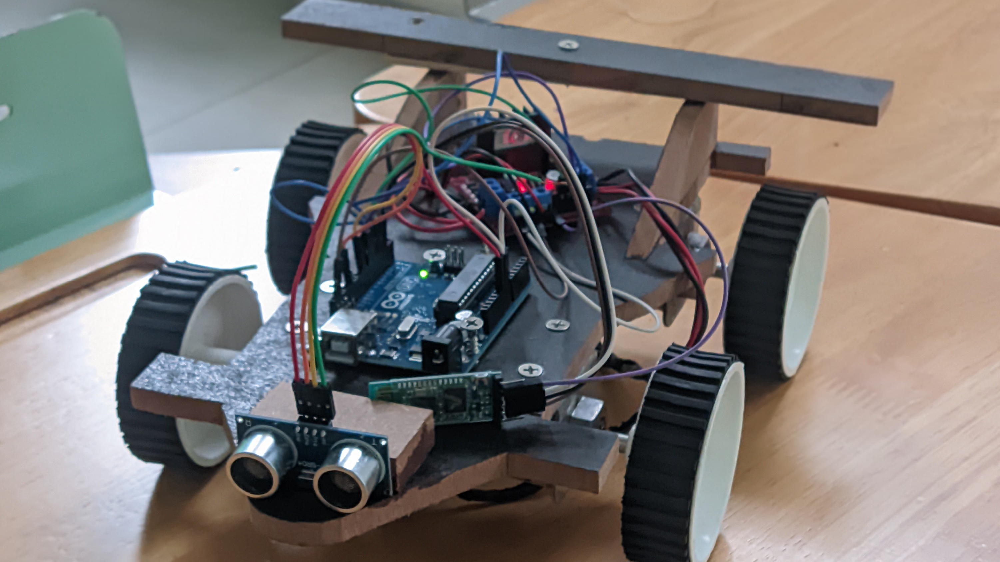

WiFi-Controlled Robotic Vehicle with Ultrasonic Obstacle Detection
HARDWARE LOGIC & SYSTEM ARCHITECTURE

Built a WiFi-controlled robotic vehicle using ESP8266 for wireless communication and Arduino for control logic. Integrated an HC-SR04 ultrasonic sensor to detect obstacles and influence movement decisions. Motor control was handled through an L298N driver to safely manage DC motor power.
System Architecture
To ensure reliable operation, communication parsing was physically separated from the motor control logic. The data flow operates sequentially from the user interface down to the hardware level:
The Arduino continuously reads the distance from the HC-SR04 sensor in the main loop. If the obstacle distance falls below a defined safety threshold, any incoming forward movement commands from the ESP8266 are overridden to prevent a physical collision.
Wireless Protocol: Used ESP8266 for 802.11 WiFi control instead of Bluetooth to significantly increase the reliable control range.
Separation of Concerns: Separated communication (ESP8266) from control logic (Arduino) to allow for easier debugging and prevent network latency from interrupting PWM timing.
Collision Mitigation: Implemented continuous ultrasonic distance measurement to safeguard the chassis.
Power Isolation: Used an L298N motor driver to isolate high-current inductive loads (DC motors) from the fragile microcontroller GPIO pins.
Signal Integrity: Ensured a shared common ground between the ESP8266, Arduino, and motor driver power sources to guarantee reliable logic-level signal communication.